Выполнить задания (см. ниже). Файлы с выполненными заданиями сохранять в личной папке в каталоге pr12. В именах файлов проектов включить номер ПР.
Оформить в MS Word отчет о работе, включающий:
Для задания 2 представить блок-схему алгоритма.
Отчет распечатать и представить при защите ПР.
Имеются данные о курсах доллара евро российского рубля за январь февраль февраль високосного года март апрель май июнь июль август сентябрь октябрь ноябрь декабрь месяц, который изменяется случайным образом в диапазоне 3% 3,5% 4% 4,5% 5% (плюс, минус) от некоторого базового курса (определить глобальной константой). *Для студентов с оценкой в КС2 8 и выше учесть, что в субботу и воскресенье курс не меняется по отношению к пятнице. Рассмотреть ситуацию, когда понедельник совпадает с 1-м числом месяца.
Далее определить:
1. День (дни), когда курс валюты был
максимальным
минимальным.
2. Среднее значение курса за месяц.
3.
Сколько дней курс был больше базовой величины.
Два любых дня с самыми минимальными курсами.
Три любых дня с самыми максимальными курсами.
Средний курс за вторую декаду месяца.
Средний курс за первую декаду месяца.
Средний курс за те дни месяца, когда курс превышал базовое значение.
Средний курс за те дни месяца, когда курс был менее базового значения.
Дни с самым большим и самым малым курсом.
Максимальный курс по четным дням месяца.
Максимальный курс по нечетным дням месяца.
Минимальный курс по четным дням месяца.
Минимальный курс по нечетным дням месяца.
Сколько раз за месяц курс менялся не более, чем на 1%.
Сколько раз за месяц курс менялся более, чем на 2%.
День, когда курс стал впервые более 2% базовой величины.
День, когда курс стал впервые менее 2% базовой величины.
Количество дней, когда курс был более 2% базовой величины.
Количество дней, когда курс был менее 2% базовой величины.
Сколько раз за месяц курс менялся со значений больше, до значений меньше базовой величины.
Сколько раз за месяц курс менялся со значений меньше, до значений больше базовой величины.
День, когда курс был ближе всего к значению базовой величины.
День, когда курс сильнее всего отличался от значения базовой величины.
Максимальную длительность периода, когда курс был менее базовой величины.
Максимальную длительность периода, когда курс был более базовой величины.
4.
Минимальный курс в дни, следующие за первым днем с максимальным курсом.
Максимальный курс в дни, следующие за первым днем с максимальным курсом.
Максимальный курс в дни, следующие за первым днем с минимальным курсом.
Минимальный курс в дни, следующие за первым днем с минимальным курсом.
Минимальный курс в дни, следующие за последним днем с максимальным курсом.
Максимальный курс в дни, следующие за последним днем с максимальным курсом.
Максимальный курс в дни, следующие за последним днем с минимальным курсом.
Минимальный курс в дни, следующие за последним днем с минимальным курсом.
Проверить, совпадает ли минимальный курс первой декады с минимальным курсом месяца.
Проверить, совпадает ли максимальный курс первой декады с максимальным курсом месяца.
Дни до и после дня с самым высоким курсом месяца.
Количество дней между максимальным и минимальным курсами месяца.
Дни, между которыми была самая большая разница курсов.
Самый высокий курс после самого низкого.
Самый низкий курс после самого высокого.
Задание 2. Изобразить блок-схему алгоритма и составить программу генерации и обработки двумерного массива.
Создать квадратную матрицу размером n×n (n вводится с клавиатуры), значение каждого элемента которой вычисляются по формуле
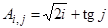. Подсчитать сумму элементов первого столбца, произведение элементов второй строки и среднее арифметическое элементов матрицы A.
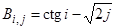. Подсчитать сумму элементов второго столбца, минимальный элемент третьей строки и произведение отрицательных элементов матрицы B.
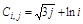. Подсчитать минимальный элемент второго столбца, произведение элементов первой строки и произведение положительных элементов матрицы C.
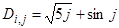. Подсчитать сумму элементов третьего столбца, максимальный элемент второй строки и количество положительных элементов матрицы D.
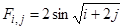. Подсчитать произведение элементов четвертого столбца, сумму элементов второй строки и количество отрицательных элементов матрицы F.
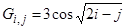. Подсчитать максимальный элемент первого столбца, произведение элементов четвертой строки и минимальный положительный элемент матрицы G.
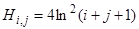. Найти максимальный элемент второго столбца, произведение элементов третьей строки и максимальный отрицательный элемент матрицы H.
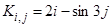. Подсчитать сумму элементов третьего столбца, минимальный элемент первой строки и количество неотрицательных элементов матрицы K.
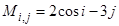. Подсчитать произведение элементов четвертого столбца, максимальный элемент второй строки и количество неположительных элементов матрицы M.
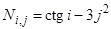. Подсчитать сумму элементов первого столбца, минимальный элемент третьей строки и заменить положительные элементы матрицы N единицей.
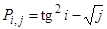. Подсчитать сумму элементов второго столбца, максимальный элемент второй строки и заменить отрицательные элементы матрицы P числом 2.
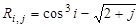. Подсчитать минимальный элемент третьего столбца, сумму элементов первой строки матрицы R. Заменить отрицательные элементы матрицы R их модулями.
При возникновении исключений расчетные значения установить равными 1.
n×n.
Вычислить среднее арифметическое положительных элементов матрицы, стоящих выше главной диагонали.
Найти в матрице первую по порядку строку с наибольшей суммой элементов. Вывести ее номер.
В матрице вычислить среднее арифметическое положительных элементов, стоящих на главной диагонали.
Вычислить количество строк матрицы, в которых есть хоть один отрицательный элемент.
Положительные элементы матрицы переписать подряд в одномерный массив.
Вывести строку матрицы, в которой элемент, стоящий на главной диагонали, максимален.
Найти сумму элементов побочной диагонали и разделить на полученную сумму все элементы последнего столбца.
В матрице найти первый по порядку столбец с максимальной суммой элементов. Вывести его номер.
Найти произведение элементов побочной диагонали квадратной матрицы.
Вывести номера всех столбцов матрицы, не содержащих отрицательных элементов.
Найти сумму положительных элементов квадратной матрицы, находящихся ниже главной диагонали.
В матрице найти первый по порядку столбец с минимальной суммой модулей его элементов. Вывести его номер.
Найти сумму отрицательных элементов квадратной матрицы, находящихся ниже побочной диагонали.
Вывести столбец матрицы, в котором элемент, стоящий на главной диагонали, минимален.
Найти сумму положительных элементов квадратной матрицы, находящихся выше побочной диагонали.
Найти произведение максимальных четных элементов столбцов матрицы.